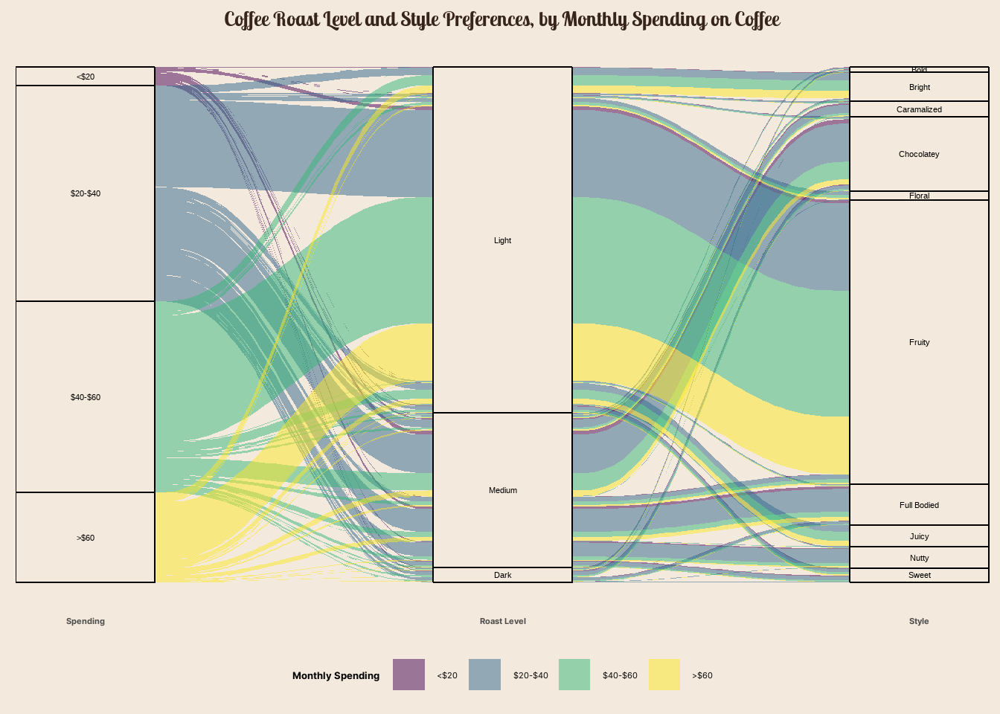

coffee_survey <- readr::read_csv('https://raw.githubusercontent.com/rfordatascience/tidytuesday/master/data/2024/2024-05-14/coffee_survey.csv')Data Context
The dataset and its information can be accessed at this link
Research Question
What is the connection between monthly spending in coffee and coffee preferences among the survey respondents?
Data Transformation
Code
df <- coffee_survey %>%
select(style, roast_level, total_spend) %>%
filter(roast_level %in% c("Light", "Medium", "Dark")) %>%
filter(!is.na(style) & !is.na(total_spend)) %>%
mutate(spending = ifelse(total_spend %in% c("$60-$80", "$80-$100", ">$100"), ">$60", total_spend)) %>%
mutate(spending = fct_relevel(spending, c("<$20", "$20-$40","$40-$60", ">$60"))) %>%
mutate(roast_level = fct_relevel(roast_level, c("Light", "Medium", "Dark"))) %>%
group_by(spending, roast_level, style) %>%
mutate(count = n())Data Visualization
Code
showtext_auto()
ggplot(data = df,
aes(axis1 = spending,
axis2 = roast_level,
axis3 = style,
y = count)) +
geom_alluvium(aes(fill = spending), curve_type = "quintic") +
geom_stratum(fill = "#f3e9dc") +
geom_text(stat = "stratum", size = 3,
aes(label = after_stat(stratum))) +
scale_x_discrete(limits = c("Spending", "Roast Level", "Style"), labels = c("Spending", "Roast Level", "Style"),expand = c(.05, .05)) +
#scale_x_continuous(breaks = 1:3, labels = c("Spending", "Roast Level", "Style")) +
labs(title = "Coffee Roast Level and Style Preferences, by Monthly Spending on Coffee", fill = "Monthly Spending") +
scale_fill_viridis_d() +
theme_classic() +
theme(legend.position = "bottom",
axis.line = element_blank(),
axis.title = element_blank(),
axis.ticks = element_blank(),
axis.text.y = element_blank(),
text = element_text(family = "Inter", size = 10),
legend.title = element_text(face = "bold"),
axis.text.x = element_text(face = "bold"),
plot.title = element_text(family = "lobstertwo", size = 20, face = "bold",
color = "#37251b", hjust = 0.5),
panel.background = element_rect(fill = "#f3e9dc", color = "#f3e9dc"),
plot.background = element_rect(fill = "#f3e9dc", color = "#f3e9dc"),
legend.background = element_rect(fill = "#f3e9dc", color = "#f3e9dc"))
Survey respondents with high monthly coffee spending (>$60) tends to prefer light roast beans over medium or dark roast, and they seems to have a penchant for fruity, bright, and juicy coffee notes.